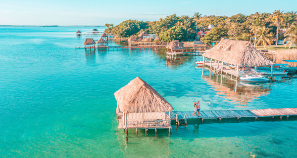
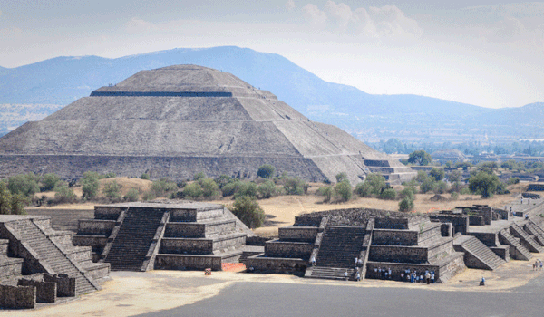
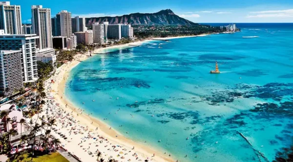
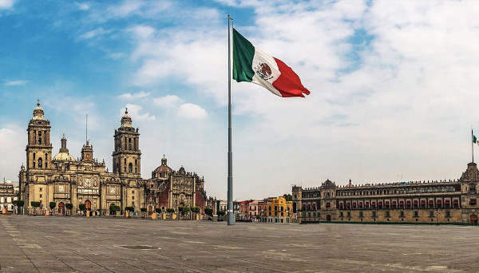

Descubra o México: Um País de Cultura, Cores e Histórias
O México é um dos países mais fascinantes e diversos do mundo, repleto de história, cultura vibrante e paisagens deslumbrantes. Localizado na América do Norte, faz fronteira com os Estados Unidos ao norte e com a Guatemala e Belize ao sul, sendo banhado pelo Oceano Pacífico a oeste e pelo Golfo do México a leste. Com uma história milenar que inclui as antigas civilizações maia e asteca, além da forte influência colonial espanhola, o México é um destino repleto de contrastes e surpresas.
O México é um país cheio de destinos interessantes e que reserva grandes cenários aos seus visitantes. O país é conhecido mundialmente por suas praias de areia branca, águas cristalinas e vida marinha abundante. A região também apresenta uma rica herança cultural, com antigas ruínas e sítios arqueológicos que remontam às civilizações pré-colombianas.
Mas antes de viajar para o país, há alguns detalhes importantes que você deve se atentar para garantir uma viagem tranquila e sem contratempos:
Documentação
O visto mexicano é obrigatório para os brasileiros desde outubro de 2023. Porém, estão isentos de apresentar o visto mexicano: Brasileiros que tenham visto válido e vigente para: Canadá, Estados Unidos, Japão, Reino Unido, Irlanda do Norte ou qualquer país integrante do Espaço Schengen.
Idioma
O idioma oficial do México é o espanhol. Embora em áreas mais turísticas o inglês seja muito falado pela população, é útil aprender algumas frases básicas em espanhol para melhorar suas interações com os habitantes locais.
Moeda
A moeda oficial do México é o Peso Mexicano (MXN), sendo amplamente aceito em todo o país. Entretanto, em virtude do México ser bastante dolarizado, ao viajar para o país é aconselhável que os turistas levem uma combinação de pesos mexicanos e dólares americanos.
Melhor época para viajar
De junho a primeira quinzena de agosto as chuvas começam a aparecer. Dias ensolarados se intercalam com dias nublados e chuvas ocasionais. É uma boa pedida pra quem vai viajar com o roteiro mais folgado, e pode se dar ao luxo de ter uma manhã, tarde ou até mesmo um dia, “perdido” por conta da chuva.
De setembro a novembro são os meses mais molhados – ao menos na Riviera Maya, onde está Cancún, Playa del Carmen e Tulum. Inclusive, é a época com maior probabilidade de furacões. Evite.
No mais, vale lembrar mais uma vez que o México é um país enorme. Dependendo dos destinos que você pretende visitar, as condições mencionadas podem não ser a realidade de tal região.
Principais pontos turísticos
1. Riviera Maia

Repleta de paraísos naturais, a região conta com as praias mais famosas do país, como a Praia de Akumal, uma das mais procuradas pelos visitantes. Também conhecida como Praia das Tartarugas, o local possui areia branquinha e águas cristalinas.
2. Ruinas de Teotihuacán

Aqui, os visitantes podem admirar uma paisagem de tirar o fôlego e aprender um pouco mais da cultura local. O sítio arqueológico impressiona pelo seu tamanho e contribuição para a história, já que foi construído em 100 AC.
3. Acapulco

Se você já assistiu a série Chaves, provavelmente ficou com vontade de conhecer Acapulco. A cidade possui muitas belezas naturais, praias e excelentes hotéis para te acomodar da melhor maneira. Além disso, a alegria do povo mexicano vai deixar sua viagem ainda mais divertida.
4. Cidade do México

O ponto de partida de qualquer lista com o que fazer no México deve ser a Cidade do México, não apenas por abrigar um aeroporto internacional, mas por ser o lugar certo para um primeiro contato com a cultura, culinária e história do país.
Muito famosa por seus contrastes, a Cidade do México permite que, em uma simples caminhada, você conheça imensos parques, ruínas arqueológicas, edifícios modernos e muito mais!